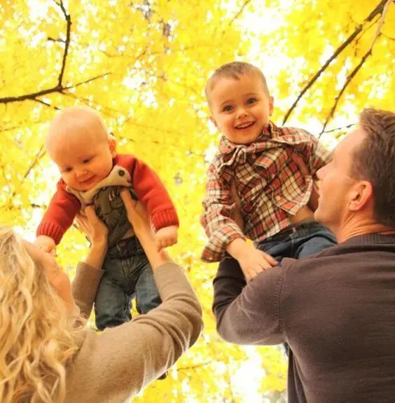
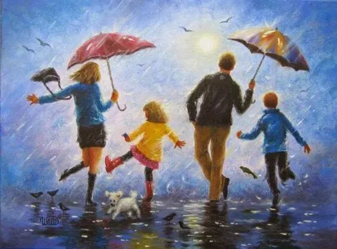
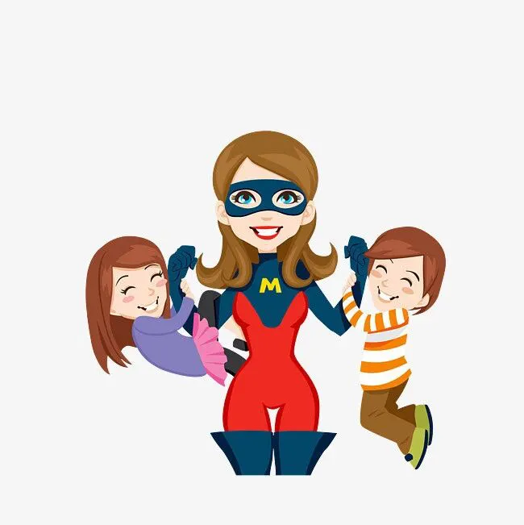

孖仔帮
公众号ID：twinsbang
关注
文|圆圈妈
网图|侵删
有了双胞胎之后，我和圆圈爸在很多时候，做很多事情，只要跟圆圈哥俩扯上关系，都习惯了群体行动，默认人多力量大，大家一起来，很少有机会单独跟其中一个孩子相处。
两年前，我全职在家一人带俩娃，一对一相处的情况更加不可能了，哪怕是有时候只是其中一个生病了，我们也是一家四口一起上医院去，总觉得有伴儿，没那么慌。
我从许多前辈的经验中得知，其实家有双胞胎的家庭，应当鼓励父母多与孩子们一对一地相处，但我发现实施起来很难，也许是习惯了一家人齐齐整整在一起的感觉，总觉得少了谁的存在都怪怪的。
有阵子，我和圆圈爸尝试着分别带一个出去玩，但很快就受不了了，因为两个娃都互相惦记着对方，都吵着要找对方玩。
而我也很不适应，习惯了外出左拥右抱，当只有一个娃在身边时，我竟然患得患失了，总是会不经意间去想，另外一个娃哪去了，在干嘛？安全吗？
真正让我尝到与双胎之一单独相处的甜头的是那偶然的两次经历，分别是单独与圆圆在家读绘本，单独与圈圈去图书馆借书。
经历1：圆圈爸带圈圈去公园踢球，我和圆圆在家读英文绘本。
我发现，没有圈圈在一旁干扰，圆圆读得特别认真，以往有圈圈在，圆圆老是一副懒懒散散的样子，不主动回答问题，总是指望着圈圈先回答，自己则在一旁心不在焉地附和，因此总让我误以为，他不喜欢读英语，他的英语没有圈圈学的好。
可是今日一见，并不是这样的，他一样读得很好，长句子也能跟得上，而且很标准。我对这样的儿子，突然感到很陌生，可是又觉得很惊喜，原来圆圆也能和圈圈一样棒棒哒！
经历2：圆圈爸带圆圆去修电脑，我带圈圈去图书馆借书。
一路上，圈圈像只小喜鹊一样，叽叽喳喳地说个不停，平时有圆圆在总是被打断，现在终于可以“像个正常人”一样说话了，他一改往日那种一着急说话就断片的状态，不慌不忙，有条不絮地给我介绍他刚了解到的地球发展史和恐龙世界，看到他眼睛里溢满星星，雄赳赳的样子，我惊呆了。
看来有圆圆在让他感到有压力了，总担心会被哥哥抢话，总急着抢先表达出来，结果却事与愿违，如今没有圆圆在场，再也不必跟圆圆抢着说，他终于可以随心所欲地想说什么就说什么了。
那一刻，我惊觉，原来他们哥俩相处在一起也蛮大压力的，小的时候没太注意，等他们渐渐长大，我越来越感觉到这种压力不容小觑：他们生为双胞胎其实挺苦恼，挺不容易的，最惨的莫过于与一个跟自己一样大，长得还一模一样的人共享妈妈的爱，而且这份母爱还经常分不匀。
仔细回忆才发现，当我们母子三相处在一起时，圆圈哥俩总是特别刻意，特别用力地表现自己，生怕自己不够突出，被我忽略了。我好像明白了，为什么当年一个哭，另外一个本来不想哭的，也要跟着哭，还要哭得更大声...刷存在感。
看到圆圆跟着我的节奏一起读绘本时向我投来特别自信的目光，看到圈圈与我分享所见所闻时那眉飞色舞的表情，我知道，他们都在为不被对方束缚，不用担心被妈妈忽视，随心所欲地做着自己而发自内心地快乐。
那一刻，我真的相信，孩子与家长单独相处时，真的会非常开心，虽然他们也喜欢跟自己的兄弟姐妹在一起，但只有自己与家长单独在一起时，才会从内心地感到高兴，那是一种无以言表的愉悦和欢乐。
而我，再也不用左顾右盼，瞻前顾后了，在与圆圆相处的过程中，不必因为顾及圈圈的情绪而心不在焉，在与圈圈相处的时候，也不必因为顾及圆圆的情绪而总是把对圈圈的爱大打折扣。这样的我，为人母，给孩子们的爱和陪伴才是最纯粹的。
单独与双胎之一相处，让我们母子仨都能轻松做自己，给彼此自由，在一定的时间和范围内给对方全心全意的对待。
更惊喜的是，我还从中发现两孩子身上很多平时看不到的闪光点和独特性，平时有人问我他们哥俩有什么不一样，我总是答不上来，好像没啥太大区别，又好像区别很大，但又说不出哪里不一样。
当我跟其中一个孩子单独相处时，一心一意，真真正正把他们当作两个不同个体看待时，顿时有了答案。
所以，家有双胞胎的家长们，请不要再苦恼为何双胞胎经常会抢妈妈了，这是孩子们在向你发出信号：觉得妈妈不够爱自己了。
每个孩子都喜欢被宠爱着，渴望着一种看得见摸得着的爱，所谓父母的爱，也只有在和孩子一对一的时候最能传达出来。
儿童心理学家经过研究发现，其实孩子想要从妈妈那里得到的是100%爱的浓度，而不是100%的时间。
因此，时间不是重点，重点的是在某段时间里，让孩子体会到爱的感觉，在与平常与孩子相处的时候，除了给每个孩子安排一些单独相处的时间以外，还可以和孩子们制造出一种独特的感觉。---（摘自《二孩养育之道》）
玩了什么，做了哪些，说了什么，只是其次，重要的是，在与双胎之一单独相处时， 给孩子们传递一种独一无二的感觉，让他们可以在不被手足的影响约束下，尽情地释放自己，表现最真实的自己，让双胎之一在每次的一对一相处中都能体会到“妈妈最爱我”。当孩子的心中有这种感觉之后，自然就会对自己这种不可代替的地位更有信心。
以前，我总觉得给双胞胎的爱不够，内心总有愧疚感，自从经常与其中一个孩子单独相处后，这种感觉越来越少了。
也许并不是真的给够了他们很多爱，而是我从心底里感觉到，他们哥俩不缺爱，他们看我的眼睛里总写着“妈妈最爱的人是我”。
在面对他们的各种纠纷时，我也比以前淡定多了，因为内心没有愧疚感，对任何一个孩子都问心无愧，所以处理他们的手足纷争会更加理智客观，而不被个人情绪或私心所左右。
对于养双胞胎，不求一切尽如人意，只求无愧于心。
像照顾独生子女一样照顾每一个双胞胎孩子，区别化对待他们，多制造与其中一个孩子单独相处的机会，营造亲密无间的亲子时光。
-END-
参考文献：《给孩子一个伴儿：二孩养育之道》《二孩时代养育经》
今日互动话题
#当了双胞胎妈妈，你经常有愧疚感吗？#
评论区聊一聊呗！
微信公众号：孖仔帮
ID : twinsbang
专注双胞胎孕育，养育，教育经验分享
扫码关注我们
点一下你会更好看耶



